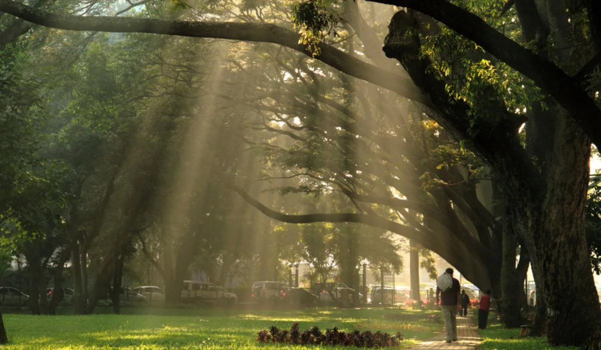
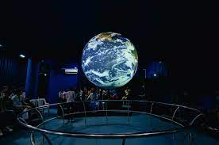
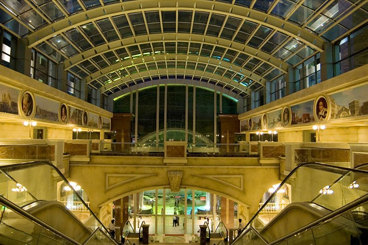
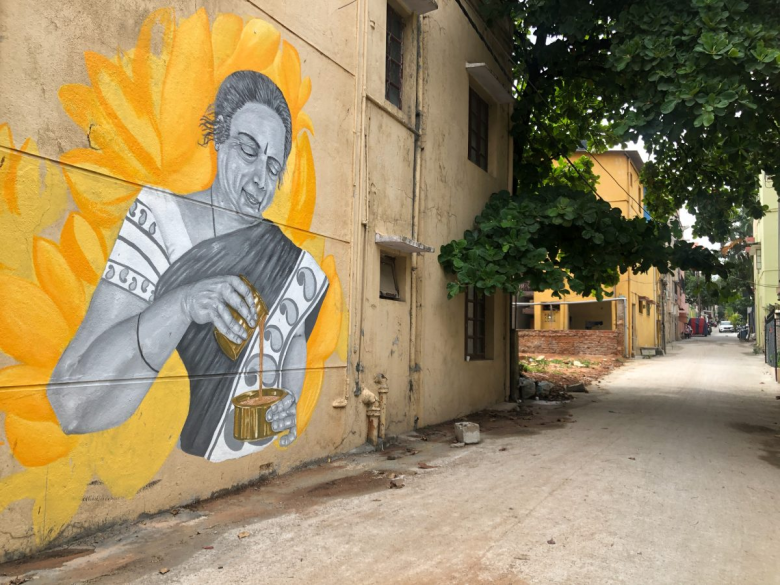
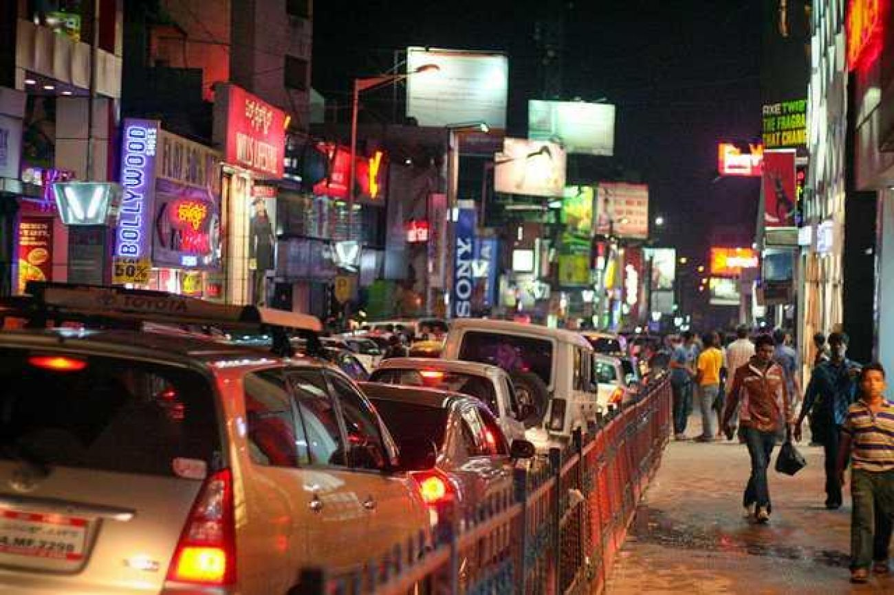

MORNING
Startyour day with a visit to Cubbon Park. Enjoy a morning stroll and visit the impressive Vidhana Soudha.

About Cubbon Park
The Cubbon Park, officially known as Sri. Chamarajendra Park is a historic park, located in the heart of the city in the Central Administrative Area. The park provides sylvan surroundings to the State Legislature building- the Vidhana Soudha, the High Court Buildings – the Attara Kacheri and a number of other organizations located along the periphery and within the park which constitute the Central Administrative Area.
The Cubbon Park has a history of over 100 years. It was established in the year 1870 by Sri John Meade, the then acting Commissioner of Mysore. The vast landscape of the park was conceived by Major General Richard Sankey, the then Chief Engineer of the State. As a mark of honor to Sri John Meade, the park was initially named as “Meade’s Park” and subsequently it was called the Cubbon Park. Since the inception of the park, it was developed and improved by adding new structures and features. In the year 1927, the park was officially renamed as “Sri. Chamarajendra Park” to commemorate the Silver Jubilee of Sri. Krishnaraja Wodeyar’s rule in Mysore State.
Explore the Visvesvaraya Industrial and Technological Museum.

The reality of the museum began with the germ of an idea born in the mind of a visionary journalist and nationalist, Mr. B N Guptha. Having travelled widely and inspired by museums in the West like the Smithsonian, he came up with the idea of establishing a similar museum in Bengaluru in 1958.
VITM was opened to the public on July 14, 1962 by the then Prime Minister Pandit Jawaharlal Nehru in the presence of scientific and political luminaries. The museum proudly housed various industrial products and engines.
Under the steady stewardship of CSIR, there was a significant transformation in the museum’s character; from being an industrial museum, it also became a science museum. In fact, VITM counts its birthday as July 27, 1965 – the day the first gallery was inaugurated.
With the setting up of the National Council of Science Museums (NCSM) in 1978, VITM came under its aegis. Apart from significantly ramping up the activities in the museum in Bengaluru, NCSM made VITM its nodal centre for South India and encouraged the setting up of science centres with state-of-the-art exhibits and activities. Thus, VITM has an influential role of moulding public interest in science in the southern part of the country.
AFTERNOON
Head to UB City Mall for lunch and some shopping.

Some Stores you can visit:
- Burberry
- Bottega Veneta
- Rolex
- Estee Lauder
- Louis Vuitton
Visit the Bangalore Art District if you're interested in contemporary art.

About Bangalore Art District in Banglore
It was yet another opening at Gallery Sumukha, founded in Bangalore in 1996. About 200 people crowded into the space, discussing the art and sharing opinions. What was distinctive about this group? The absence of anyone from the IT industry for one. “We have never had anyone from the IT industry visit our gallery or buy our work,” said owner, Premilla Baid. “We’ve always wondered why. Do they support other things like theatre or do they simply not connect to the art and culture scene in Bangalore?”
Bangalore’s art scene is still nascent compared to Delhi or Mumbai. In the sixties and seventies, influential artists such as K.K. Hebbar moved out of the city to gain fame. In the 1980s, artists such as S.G. Vasudev, Balan Nambiar, Yusuk Arakkal and Gurudas Shenoy lay down roots in Bangalore and infused imaginative regionalism into the framework of Indian Modernist art. They used spirituality, crafts and folk idioms in their work, showing largely outside Bangalore. Government museums such as the Karnataka Chitrakala Parishath (CKP) and Venkatappa Art Gallery were viewed as old-fashioned moribund institutions.
EVENING
Explore MG Road, known for its vibrant nightlife

What is MG Road famous for?
MG Road Bangalore | Brigade Road | Hotels, Restaurants, Pubs
It was known as South Parade during the pre-independence era but was renamed as Mahatma Gandhi Road or MG Road on 26th February 1948. Today, MG Road is best known for its amazing shopping experience, restaurants, cafes and food outlets offering delectable delicacies.

Enjoy shopping or have dinner at one of the trendy restaurants or pubs.
Some of the top lip-smacking restraunts you can try:
- Rim Naam
- Hard Rock Cafe
- Nagarjuna
- The Permit Room
- Arbor Brewing Company - Brewpub & Eatery